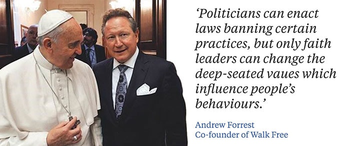

GFN works with faith leaders across the world, equipping them to identify trafficking crimes in their communities, assist their congregants and engage with governments.

GFN works with faith leaders across the world, equipping them to identify trafficking crimes in their communities, assist their congregants and engage with governments.
The GFN's roots date back to a historic event at the Vatican, on December 2nd 2014, convened under the auspices of Walk Free.
Faith leaders from across the world gathered at the Vatican to pledge to combat modern forms of slavery. His Holiness Pope Francis, for the Cathotic Faith, Archbishop Justin Welby for the Anglican Faith and Grand Ayatollah Mohammad Taqi al-Modarresi for the Shia Muslim Faith, and Mohamed were in attendance.
Please consult Walk Free/faith for further information on how and why faith leaders can play a role. For more information on GFN, please visit Walk Free/GFN. Lastly, for more information on Walk Free, please visit: Walk Free/Overview
